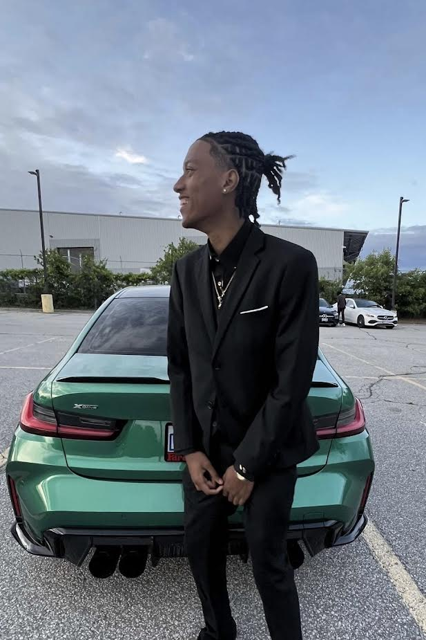

Education
I study networking and It security at Ontario tech University. I am building my skills in Networking, web development, and IT security], and I use what I learn in labs and real projects.

I'm Isaiah
Let's work together,
send me a message!
I study networking and It security at Ontario tech University. I am building my skills in Networking, web development, and IT security], and I use what I learn in labs and real projects.
I first realized that hacking like in the movies can be a real job through modding in games and watching hackers in films. That moment turned a hobby into something I could actually build a career around.
My love for tech comes from always being in front of a screen (maybe that’s why my eyesight is so bad). I love how ping works in video games, and I’m always the one trying to fix the Wi-Fi when it goes down.
I began playing video games with my dad when I was quite little. My fascination in technology began with those games, which I later played with my brother and friends.
I’ve been gaming from a young age, starting with racing games with my dad. Later I played them with my friends and my brother, and those games are where a lot of my interest in tech started..
I want to become a police officer and join the cybercrime unit, or work as a digital forensic investigator alongside the police. My goal is to help solve cybercrime and protect people from it.
Where I started, what I am doing now, and where I want to go.